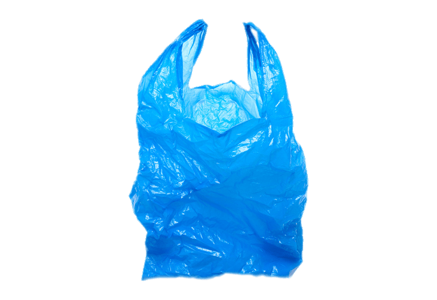
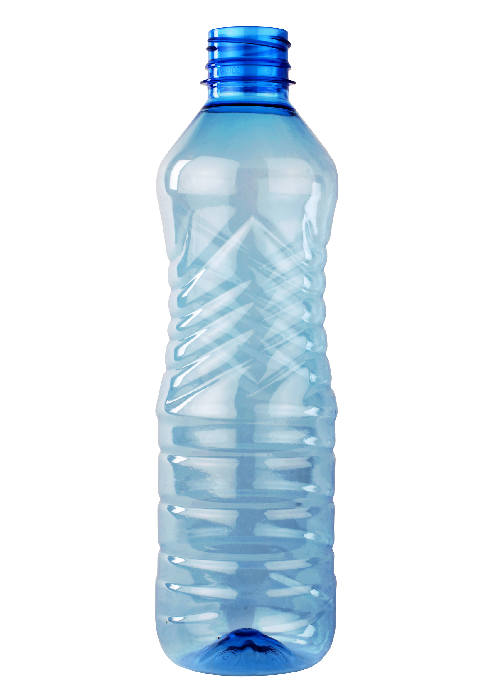

울산 남구 장생포 앞바다에 고장 난 폐선들이 제대로 된 관리 없이 방치돼 기름유출로 인한 환경오염이 우려되고 있다.
폐선들을 조속히 인양해야 한다는 지적이 일고 있지만 선주들은 비용문제로 인양을 미루고 남구는 사유재산이라 강제로 인양할 수 없다는 입장이다.
25일 찾은 남구 장생포 어업지도선 관리소 항만 끝에는 고장 난 폐선 10여척이 방치돼 있다.



인도네시아 측은 향유고래 몸속에 들어있던 내용물을 다음과 같이 트위터를 통해 알렸다.
"플라스틱(19개, 140g), 플라스틱병(4개, 150g), 비닐봉지(25개, 260g), 플립플롭(2개, 270g), 실 뭉치(3.26kg) 및 플라스틱 컵(115개, 750g)이 고래 사체에서 나왔다.
세계자연보전연맹(IUCN) 지정 멸종위기종인 붉은바다거북과 푸른바다거북 제주에서는 지난 6월에도 붉은바다거북이 폐기물에 걸린 채 구조되었다
유령 어업(ghost fishing)바다에 버려진 어구(주로 그물)에 물고기 등 해양생물의 몸이 얽히는 것, 몸이 얽힌 해양생물은 이동에 제한이 생겨 굶어 죽거나,상처를 입어 병에 걸리거나, 질식사한다
유령 어업(ghost fishing)바다에 버려진 어구(주로 그물)에 물고기 등 해양생물의 몸이 얽히는 것, 몸이 얽힌 해양생물은 이동에 제한이 생겨 굶어 죽거나,상처를 입어 병에 걸리거나, 질식사한다